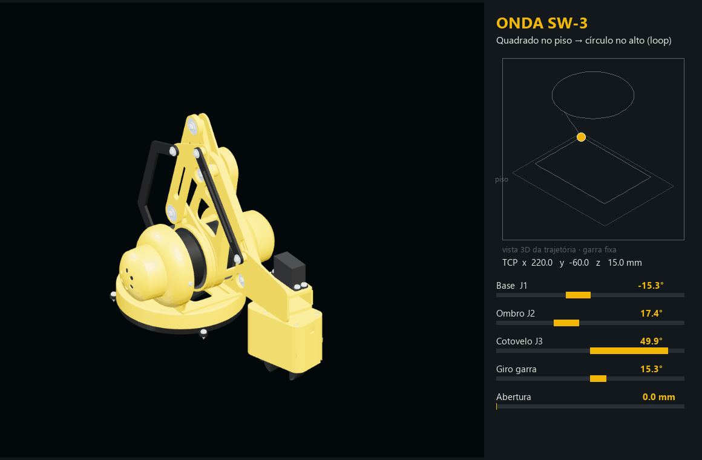

Experimental animation & inspection
A dedicated workspace for joints, coordinated poses, keyframes, visual deformation and sampled distance checks.
THE 0.7.0 UPDATE
0.7.0 ALIEN FORMA
From editable parts to coordinated movement — with an experimental Animation workspace and a more direct AI workflow.
Local CAD projects. Native modelling tools. Connected through MCP.
 ONDA SW-3 ROBOTIC ARM STUDY
ONDA SW-3 ROBOTIC ARM STUDYONE MODEL. MORE POSSIBILITIES.
Experimental animation. For now, the most practical way to set up motion is with an AI agent connected through MCP. We are improving manual setup in the interface to make it simpler and more intuitive.


Joint-driven poses, keyframes and playback. The motion demo is kinematic; its trajectory overlay is a presentation annotation.

Design-reference sheet. Verify dimensions and fits before fabrication.
A dedicated workspace for joints, coordinated poses, keyframes, visual deformation and sampled distance checks.
Improved opening times and editing responsiveness, with more reuse of geometry that has not changed.
More consistent navigation and selection focus. User and AI cameras work independently.
Improved joint rotation handling, pose updates and consistency between the selected pose and its captured image.
Clearer connection feedback, explicit manual control, fewer repeated requests and batch edits with Undo.
Refined project opening, orthographic view requests, hierarchy placement and inspection feedback, including results that need further checking.
Check each channel's available version. Microsoft Store updates follow a separate review.
Preview results do not certify physical strength or a collision-free path. Structural analysis is experimental and requires supported solver components.